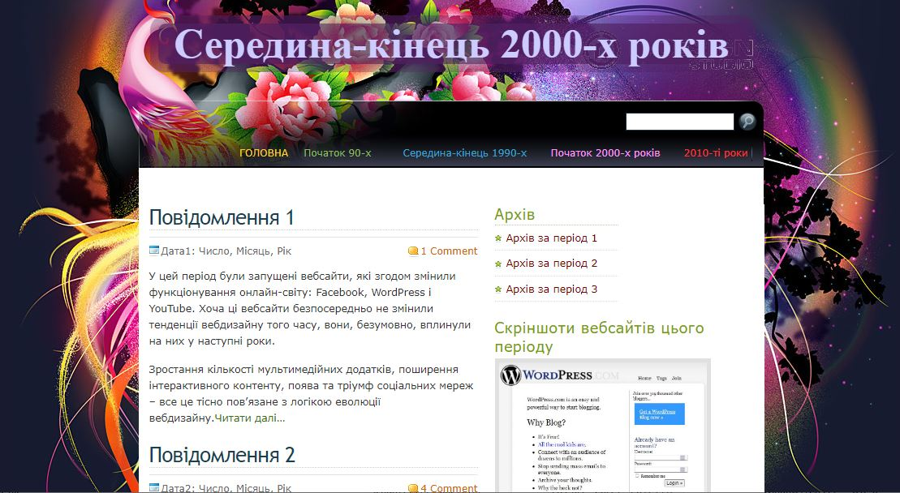
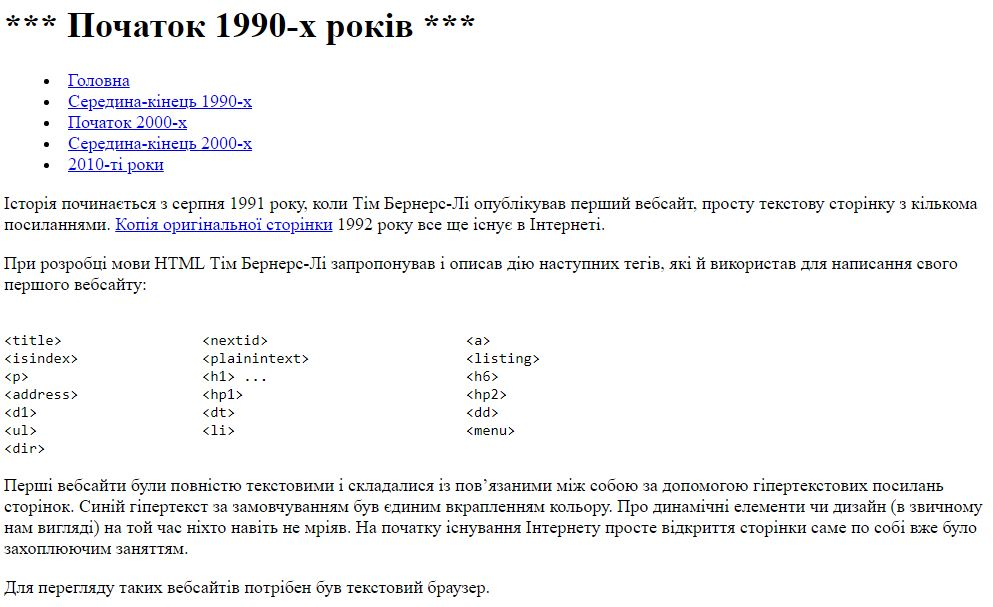
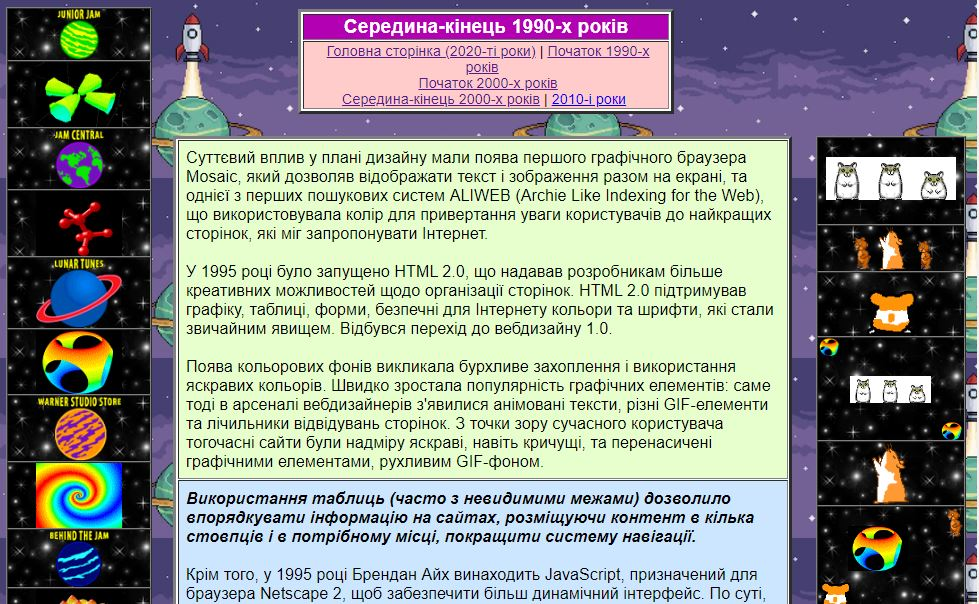
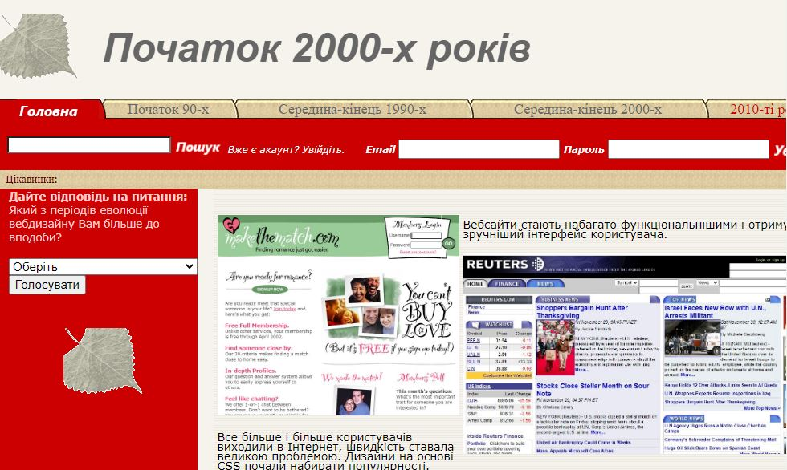
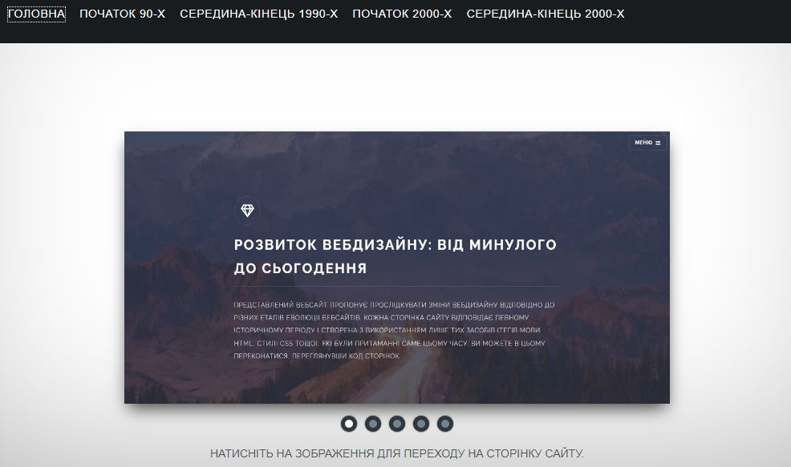

Середина-кінець 2000-х років
Поява системам управління контентом (CMS) дозволила неспеціалістам почати створювати власні вебсайти. Також цей період вважають епохою появи Web 2.0.
Дивитися далі...
Перші вебсайти були повністю текстовими і складалися із вебсторінок, пов’язаних між собою за допомогою гіперпосилань. Для їх перегляду достатньо було текстового браузера.
Дивитися далі...
Вебсайтам цього періоду притаманне бурхливе захоплення яскравими, навіть кричущими, кольорами, рухливим GIF-фоном, анімованим текстом, перенасиченістю графічними елементами тощо.
Дивитися далі...
Дизайн на основі CSS почав набирати популярності. Кольори стали спокійнішими, приємнішими. Вебсайти стають набагато функціональнішими і отримують зручніший інтерфейс користувача.
Дивитися далі...Вебсайти, створені у ХХІ столітті, виглядають вже зовсім звично для нас.

Поява системам управління контентом (CMS) дозволила неспеціалістам почати створювати власні вебсайти. Також цей період вважають епохою появи Web 2.0.
Дивитися далі...
Почався швидкий розвиток адаптивного дизайну через масове використання мобільних пристроїв для виходу в Інтернет. Дизайнери все більше схиляються до індивідуальності в оформленні вебсайтів.
Дивитися далі...Через нещодавню пандемію ще більшу популярність отримали конструктори сайтів та системи управління контентом (CMS). І з'явилася нова проблема, хоча про неї вже говорили ще років 5-7 назад. Вебдизайнери почали задаватися питанням: «Чи вебдизайн мертвий?». Ви можете знайти статті, що задають одне і те ж питання, на всіх відомих платформах, таких як Medium, Mashable, SmashingMagazine, Quora і Reddit тощо. Найпоширенішими причинами цього є:
Але хотілося б все ж таки вірити у позитивні зміни в розвитку вебдизайна. Зміна існуючих та поява нових технологій призведе і до цікавих змін у дизайні сайтів. Відбудеться ще більше залучення користувачів до сайтів, віртуальна реальність (VR), штучний інтелект (AI) і доповнена реальність (AR) будуть на передньому плані. Варто згадати і про Web 3.0, про який деякі вважають, що цей етап еволюції Інтернету вже почався, а інші очікують його тільки в майбутньому.
Web 3.0 – це третє покоління Інтернету, в якому вебсайти та додатки зможуть обробляти інформацію майже як людина, за допомогою таких технологій, як машинне навчання (ML), великі дані, технології децентралізованого реєстру (DLT) та ін. Розробник всесвітньої павутини Тім Бернерс-Лі називав Web 3.0 семантичною павутиною, призначеною для автоматичної взаємодії між системами, людьми та домашніми пристроями. Фокус технології був зосереджений на створенні більш автономного, інтелектуального та відкритого Інтернету.
Ключовими особливостями Web 3.0 є:
У вебдизайні новими стильовими елементами сайтів можуть бути: